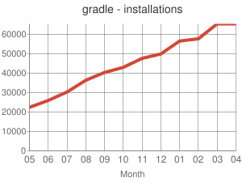
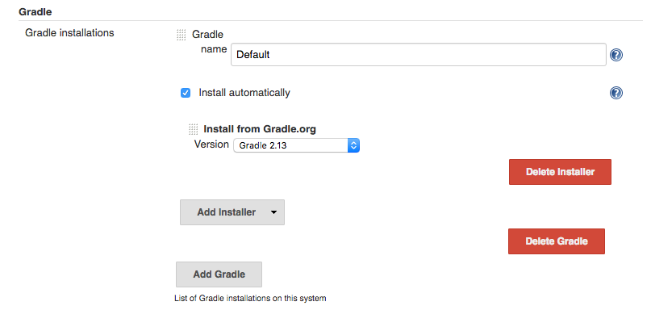
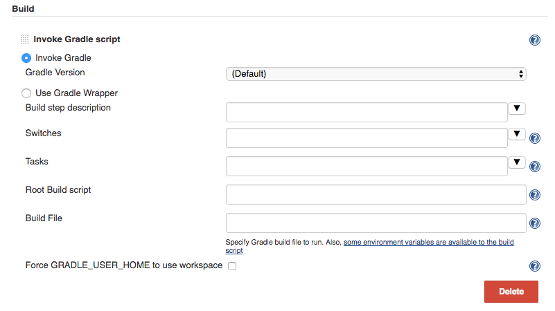
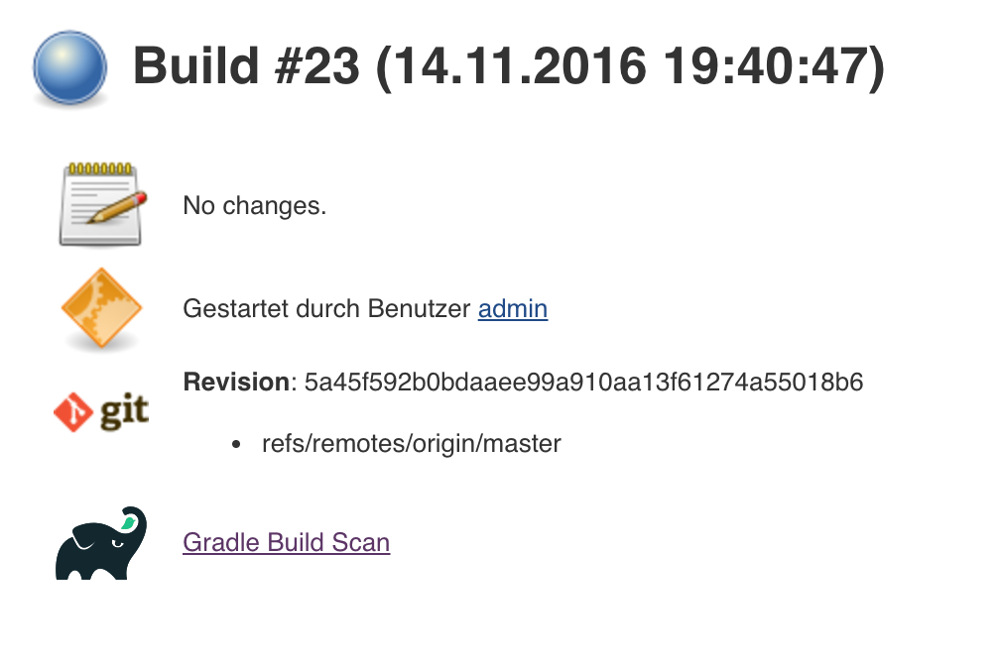
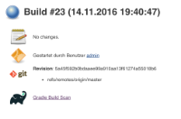

Plugin Information
Plugin ID |
gradle |
Changes |
|
|---|---|---|---|
Latest Release |
1.26 (archives) |
Source Code |
GitHub |
Usage |
 |
Installations |
2016-May 22336 |
This plugin makes it possible to invoke a Gradle build script as the main build step.
Description
This plugin adds Gradle Support to Jenkins. Gradle is managed as another tool inside Jenkins (the same way as Ant or Maven),
including support for automatic installation and a new build step is provided to execute Gradle tasks.
Configuration
Gradle configuration is performed in the Configure System (before Jenkins 2.0) or Global Tool Configuration (starting in Jenkins 2.0). In both cases these options reside in the Manage Jenkins section.
In the Gradle section provided by this plugin, several installations can be configured:

The system provides both automatic installation, which can be performed by directly downloading from the Gradle web site, extracting a compressed final or executing some shell commands.
Besides, for nodes which already has Gradle installed, the tool can by manually configured, by unchecking the Install automatically checkbox and providing the base path (GRADLE_HOME) of the installation.
Usage
The Gradle plugin provides an Invoke Gradle script build step.

The first configuration option is whether to use one of the
installation configured in Jenkins (see previous section) of use the Gradle Wrapper
which is the Gradle-provided mechanism to "embed" the use of a specific Gradle version in a build, installing it if neccessary.
Other configuration options include:
- A description to use for the build step.
- Switches (options) to provide to the Gradle execution.
- Tasks to execute (if blanck the defaults tasks of the build will be invoked).
- Path to the build script if different from the root directory of the build.
- Name of the build script if different from
build.gradle.
If a Gradle Build Scan is produced during a build, then a link to it is added to the build page.

Roadmap
- Using the Gradle API for accessing all the Gradle functionalities
- Providing a Maven-like or Ivy-like integration
- Multi-project detection
- Adding automatic tests result path detection
- Listing executed tasks with time execution for each task
- Providing a log for each module in a multi-project
Changelog
Release 1.26 (Feb 13 2017)
- Use @DataBoundSetter instead of a (too) large
@DataBoundConstructor - Add @Symbol annotations for step and tool (JENKINS-37394)
- Make it possible to configure the wrapper location (JENKINS-35029)
- Update icon for build scan integration
- Remove description from build step
Release 1.25
- Update core dependency to 1.580.1 JENKINS-34790
- Fix for Gradle wrapper not working when Gradle version was previously selected (JENKINS-24682)
- Long task names in console outline should not overlap console output (JENKINS-26287)
- It is now possible to pass Gradle build parameters as project properties (JENKINS-17523)
- If a Gradle Build Scan is produced during the build then a link is added to the build page.

Release 1.24
* Fix JENKINS-18629 - Jenkins fails to save configuration when using Invoke Gradle script in Conditional Step (single).
Release 1.23
* Fix issue #17386 - Gradle.properties ignored after 1.22 upgrade. GRADLE_USER_HOME is now no longer set to the workspace of the job by default. If you wish to have the workspace job as the GRADLE_USER_HOME, you will need to change the config to reflect this.
Release 1.22
* Fix JENKINS-17294 - mask sensitive variables (Password parameters)
* Fix JENKINS-13412 - use hudson.util.ArgumentListBuilder#toWindowsCommand
* Set GRADLE_USER_HOME all the time
Release 1.21
* Add the ability to allow gradlew to still be run from workspace
top, but to also configure it so that gradlew is found in the root build
script directory.
* Fix JENKINS-12769 - Cannot specify location of gradle wrapper
* Fix JENKINS-15406 - When using gradlew, root build script field is not used to locate gradlew
Release 1.20
* Fix JENKINS-15166 - Gradle plugin fails to save selected Gradle Version in Project configuration
Release 1.19
* Fix broken file permission introduced by JENKINS-14780
Release 1.18
* Fix JENKINS-14780 - make gradlew script executable
Release 1.17
* Merge pull request - Change Gradle Wrapper logic to use the launcher's OS type rather than master's OS type when determining Gradle Wrapper script name
Release 1.16
* Fix reopened JENKINS-9538 - hudson.model.FreeStyleBuild & GradleInstallation not serializable => Gradle build not working anymore
Release 1.15
* Fix reopened JENKINS-13412 - Gradle plugin fails to quote parameters without whitespace when containing input/output redirection symbols, e.g. in XML strings
Release 1.14
* Fix JENKINS-13412 - Gradle plugin fails to quote parameters without whitespace when containing input/output redirection symbols, e.g. in XML strings
Release 1.13
* Fix JENKINS-9538 - hudson.model.FreeStyleBuild & GradleInstallation not serializable => Gradle build not working anymore
Release 1.12 (October 30, 2011)
* Fix JENKINS-9553 - Gradle wrapper command fails on Windows
Release 1.11 (October 02, 2011)
- Coloring output log and Navigation executed tasks (from pull request of ikikko)
Release 1.10 (September 07, 2011)
- Provide dry-run option for the DryRun Plugin
Release 1.9 (June 24, 2011)
- Integrate pull request - Enable JAVA_OPTS
Release 1.8 (April 01, 2011)
- Add pull request 'Let users use the Gradle wrapper'
Release 1.7.1 (March 24, 2011)
- Fix 1.7 to properly set required Jenkins version.
Release 1.7 (March 23, 2011)
- Add automatic tool installer
Release 1.6 (February 27, 2011)
- Fix 1.5 to properly set required Jenkins version.
Release 1.5 (February 19, 2011)
- Update to Jenkins 1.397 API and metadata
- Change UI labels from Hudson to Jenkins
Release 1.4 (June, 09, 2010)
- Fix help messages
- Add technical internal behavior for a suitable Artifactory/Gradle integration (with the buildinfo)
Release 1.3 (February 23, 2010)
- Add a description message in the build step
- The plugin makes it possible to extract a Gradle distribution from a shared location or from a command line, and uses this
distribution for running the build.
Release 1.2 (February 07, 2009)
- Add a distinction between switches and tasks
- The plugin makes its possible to specify the location of the build script if the workspace has a top-level build.gradle in somewhere other than the module root directory
- Improve user help messages
Release 1.1 (November 07, 2008)
- Add the support of Gradle 0.5
Before the version 0.5, the gradle windows executable file was "gradle.exe" and you lost the ERRORLEVEL value.
From Gradle 0.5, the window launcher is a .bat file that conserves the correct ERRORLEVEL value.
Release 1.0 (October 04, 2008)
- Initial release
6 Comments
Hide/Show Commentspaderka
Hi,
I am using the Gradle plugin in my Jenkins installation and everything works fine. I am just curious if there is any way how to show gradle build profile report in Jenkins (I run a gradle build with switch --profile).
Thank a lot for your replies.
Jan
Fernando Rubbo
Why, I would like to run a Gradle Script in a post-build action. There is any plan to to that?
Joris van der Pol
Hi,
does the plugin support the Gradle daemon?
What I wanted to do is start a Gradle daemon in the background when Jenkins is up and whenever a gradle script is invoked use that daemon to speed up the execution.
With kind regards
Marc Günther
It would be nice to have at least some kind of documentation. Like, what advantage does this plugin have over simply calling
gradlefrom anExecute Shellbuild step?!?B Hicks
Trying to look at the console output of a build job which uses this Gradle plugin results in a near-immediate browser crash. In trying to figure out why this is happening, I discovered that while in the console view of a build there hundreds and hundreds (possibly infinite) of "Executed Gradle Tasks" boxes along the left-hand edge of the screen. All of these "Executed Gradle Tasks" boxes are empty, but there are so many that I am fairly certain this is what is crashing the browser.
Anne Moroney
We've been using this plugin for a while. It adds a huge number of left navigator links on the page. I wish I could skip them or make it more selective. Maybe that's the root cause of your issue?
Add Comment